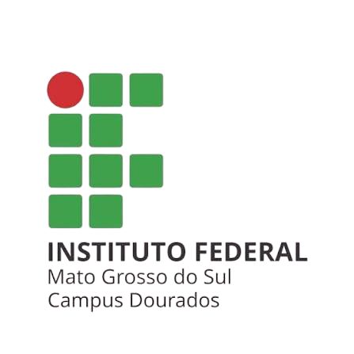

Na disciplina de matemática, ensinada pela professora Cristiane Bender,fomos orientados para preencher uma planilha, teriamos que verificar a potência(em Watts) e o tempo médio de uso diário pessoal(em minutos) dos equipamentos listados no quadro para calcular o consumo de energia elétrica de quando utilizamos esses aparelhos.
A disciplina de Ferramentas de desenho é explicada pela professora Fabrícia Ferreira de Souza, o trabalho foi produzir 6 cards incentivando a reduzir o consumo de energia elétrica dos aparelhos domesticos, tinha que criar design para os cards e seguir as mensagens de motivação elaboradas pela professora Fabricia, os cards foram realizados no aplicativo Inkscape.
O vídeo mostra que é possível economizar energia elétrica com pequenas mudanças no dia a dia. Muitas vezes a gente gasta energia sem perceber, deixando luzes acesas, aparelhos ligados na tomada ou usando alguns equipamentos por mais tempo do que precisa. Também são dadas dicas bem simples, como aproveitar a luz do sol, usar lâmpadas de LED, desligar os aparelhos quando não estiver usando e prestar atenção nos equipamentos que consomem mais energia. Assim, além de ajudar o meio ambiente, também dá para economizar na conta de luz.
Acesse a planilha de matemática